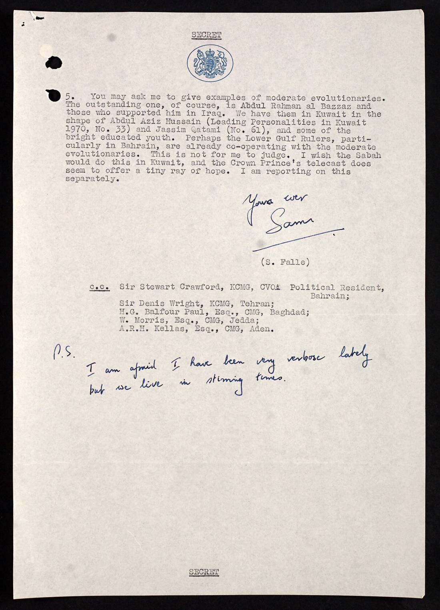

١٩٧٠ · رسالة سرية من السفير البريطاني في الكويت، بنسخ إلى سفارات الخليج
جاسم القطامي «تطوري معتدل»
ما هي
يذكر السفير عبدالعزيز حسين وجاسم القطامي مثالين في الكويت على «التطوريين المعتدلين»، أي من يريدون إصلاحا متدرجا، ويتمنى لو أن آل الصباح يتعاونون معهم.
أهميتها
تغيّر في النظرة البريطانية: بحلول ١٩٧٠ يوصف جاسم بالمعتدل.
من المقصود
هو جاسم القطامي نفسه الوارد اسمه الكامل في وثائق أخرى: مدير الشرطة الذي استقال وقت أزمة السويس، ثم النائب القومي في مجلس الأمة.
صور الصفحات

النص الأصلي
5. You may ask me to give examples of moderate evolutionaries. The outstanding one, of course, is Abdul Rahman al Bazzaz and those who supported him in Iraq. We have them in Kuwait in the shape of Abdul Aziz Hussain (Leading Personalities in Kuwait 1970, No. 33) and Jassim Qatami (No. 61), and some of the bright educated youth. … I wish the Sabah would do this in Kuwait, and the Crown Prince's telecast does seem to offer a tiny ray of hope.
أسماء أخرى
عبدالعزيز حسين
المصادر
الأرشيف الوطني البريطاني في لندن، رقمنه الأرشيف الرقمي للخليج العربي (agda.ae). الصور منشورة بإذن من الأرشيف الوطني البريطاني.
مرجع الأرشيف
- FCO 8/1314 · Political relations between United Kingdom and Gulf
كيف كُتب هذا النص: نُسخ من قراءة الأرشيف لنص الصورة، وصُحح بالمقارنة مع الصورة حيث كانت القراءة مشوهة. وتشير … إلى نص محذوف. الترجمة العربية من Claude، يرجى مراجعتها.
افتح في الموقع التفاعلي